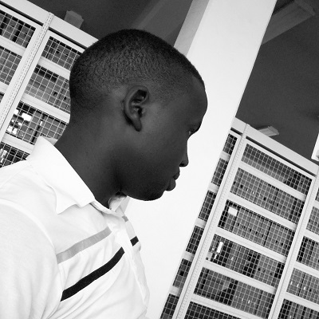

|  | Who am I?I am Elkana Rop, a tech-entrepreneur, a part-time photographer and a talented artist. I was born and raised at Nandi Hills, Rift Valley Kenya in a military family of 5 siblings of which 4 are energetic men and one beautiful sister. |
Bachelor’s degree in Informatics at Moi University in Kenya Several months experience as a software developer. I discovered I could use technology tools to come up with solutions to problems in society. My skill sets in web development, ecommerce application development, mobile money gateway integration, database systems and GIS application development has been instrumental in tremendously shaping my perspective in my career life and I can now see the world through technology lens.
MEST has been one of those godsend opportunities which I will always treasure since every word at the recruitment portal coincidentally described who I wanted to be, a software entrepreneur. #FurtureMe. MEST has a comprehensive curriculum, resourceful facilitators, ample environment, culturally diversified communities and rich culture, wich proved to be all I ever needed in order to get started in my tech entrepreneurial journey.
Capacity building by adding on to my skills set programing skills, communication skills, entrepreneurship culture. Social and people skills from the interactions with personalities around Africa. Work with teams to produce a minimum viable product and create a new tech company
Business & entrepreneurship skills set to enable me marry technology & business Mastery for the art of communication especially in a corporate environment ie pitching ideas and presentations so as to be able to tell my story, win investor funds, inspire and even impact the society.